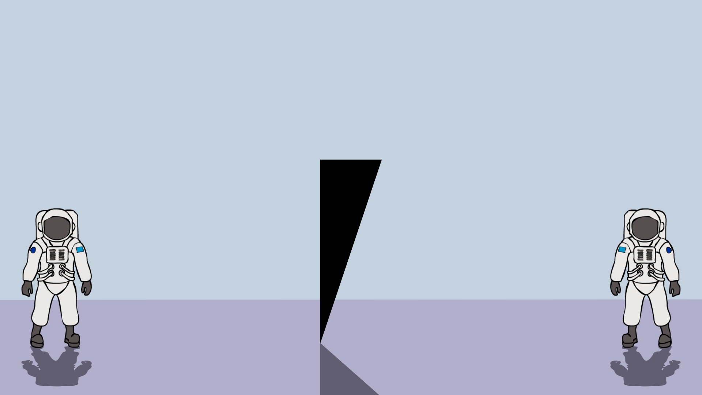
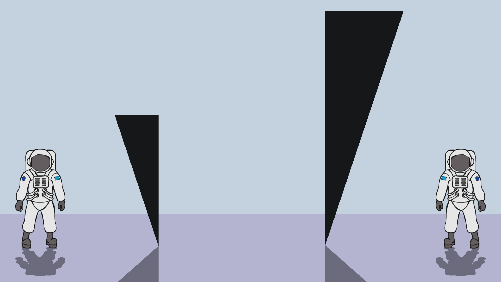
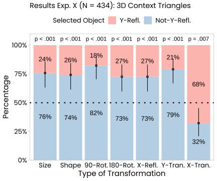

The data set contains the following columns:
A potential concern about our main studies might be that we asked subjects to select the object emitting a “different intensity of alpha rays”. Although systematic differences in subjects’ preferences must be due to the geometrical transformations we manipulated, a more direct question would be to ask subjects to say which object is “different from the first one”. This was what we did in Supplementary Experiment 7, which is otherwise identical to our Main Experiment 1a.
Four hundred and thirty-four participants (\(n~62\) per theoretically relevant condition, \(M_{age}~= 37.48\), \(SD_{age}~= 11.69\), age range \(18-75\)) were recruited via the online platform Prolific (). Inclusion criteria were: age range between 18 and 99 years old, a subject’s approval rate concerning participation in previous studies of at least 90%. To ensure that subjects could read and understand the materials, we excluded subjects who received no formal education. Participants received a link that led them directly to the online experiment, which was created with the JSPsych framework (https://www.jspsych.org/7.3/). Subjects received a monetary reward for their participation. Subjects were not informed about the hypotheses that we tested. We decided to test about half as many subjects than in our main experiments and stopped data collection after \(n~=62\) subjects per (transformation) condition.
The experiment had the same seven between-subjects conditions as our other studies. Conditions differed with respect to the target geometrical transformation. A demo of the experiment can be run here.
After some general information and confirmation questions, subjects read the following scenario description:
Scientists on an extraterrestrial mission have landed on a foreign planet not so different from planet Earth. They start exploring their surroundings and walk through a desert. They soon notice an unfamiliar black object. Below you can see the photograph they took.
If you have studied the information thoroughly, please click “Continue” to proceed.
Subjects then proceeded to the test screen, where two objects were shown (the example below comes from the “size” condition):
Later on, the scientists arrive in front of two new objects. Below you can see the photograph they took.

Whether the Y-Reflection object was displayed on the right or the left was counterbalanced between subjects. On the same screen below the picture, subjects were asked the following test question:
According to your intuition, which of these two novel objects belongs to a different kind of objects than the first object the scientists saw?
They could select between two options in this study: “The left object” vs. “The right object”.
Subjects then provided demographic data, had the chance to report any technical issues they might have experienced, and then finished the experiment on a short debriefing screen.
We had also conducted a pilot study with half as many subjects. The pilot study was identical until after the main test question. Unlike subjects in the main study, subjects of the pilot study were asked to write a short explanation of their choice.
The knitted analysis file can be accessed here. Subjects’ selections in the different transformation conditions are shown in the following graph:

This graph shows that the selection behavior was almost identical to the one we observed in Experiment 1a. We thus find the same pattern of results even if we don’t ask for differences in a certain physical parameter (e.g., “intensity of alpha rays”) rather than the “difference between objects”.
Copyright © 2023 ANONYMIZED AUTHORS.